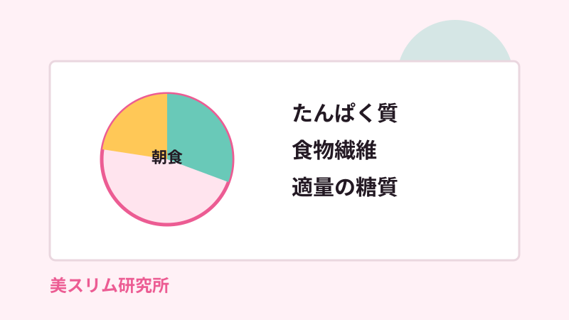
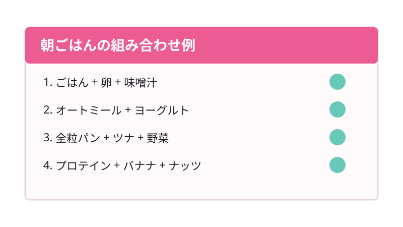

ダイエット中の朝ごはんは、抜けばよいわけではありません。特に女性は、朝食を極端に減らすと昼以降の食欲が強くなったり、間食が増えたり、体調の波が大きくなることがあります。
基本は、たんぱく質、食物繊維、適量の糖質をそろえること。量を減らすより、血糖値が乱れにくく満足感が続く組み合わせに整えるのが現実的です。
朝ごはんを抜くと痩せにくくなることがある理由
朝を抜くと摂取カロリーは一時的に減ります。ただし、空腹時間が長くなりすぎると昼食で早食いになりやすく、甘いものや脂質の多いものを選びやすくなります。
体重を落とすにはカロリー管理が大切ですが、毎日続く形にするには空腹のコントロールも同じくらい重要です。
ダイエット中の朝ごはんで意識したい3つの軸
- たんぱく質: 卵、魚、鶏むね肉、納豆、豆腐、ヨーグルトなど
- 食物繊維: 野菜、海藻、きのこ、オートミール、もち麦など
- 適量の糖質: ごはん、全粒パン、オートミール、果物など

忙しい朝でも作りやすいメニュー例
ごはん派
小盛りごはん、卵、納豆、味噌汁の組み合わせは、満足感が高く準備も簡単です。味噌汁にわかめやきのこを足すと食物繊維を増やせます。
パン派
全粒パンにツナや卵、サラダを合わせると、菓子パンより腹持ちがよくなります。甘いパンだけで済ませる日は、無糖ヨーグルトを足すと整えやすくなります。
時間がない日
プロテイン、バナナ、ナッツ、ヨーグルトなどを組み合わせます。液体だけにせず、噛むものを少し入れると満足感が出やすくなります。
まとめ
ダイエット中の朝ごはんは、我慢より設計です。たんぱく質、食物繊維、適量の糖質をそろえ、昼以降に崩れにくい朝食を作りましょう。